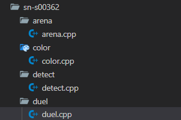

注：由于在这个网页上展示图片不方便，所以直接由代码块方式展现。
本场比赛共有 776 份文件夹。
本场比赛共有 2617 个文件被提交。
本场比赛共有 2665 个 main()。
本场比赛共有 5152 个 freopen，
其中有 116 个被注释。
1. 准考证小写人

2. cin << 人
#include<bits/stdc++.h>
using namespace std;
int main(){
freopen("arena.in","r",stdin);
freopen("arena.out","w",stdout);
int a;
cin<<a;
return 0;
}
3. freopen("") 人
//******* ***（这里是TA的名字我屏蔽了） SN-S00***
#include
using namespace std;
int main(){
freopen("")
ios::sync_with_stdio(0);
cin.tie(0);
cout.tie(0);
return 0;
}